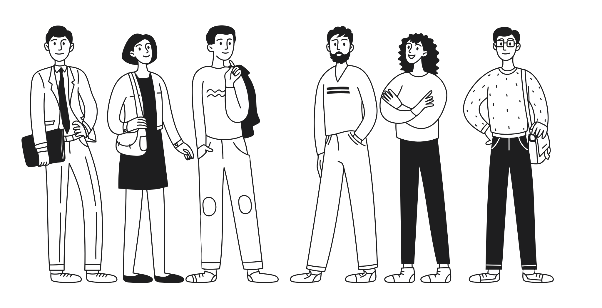
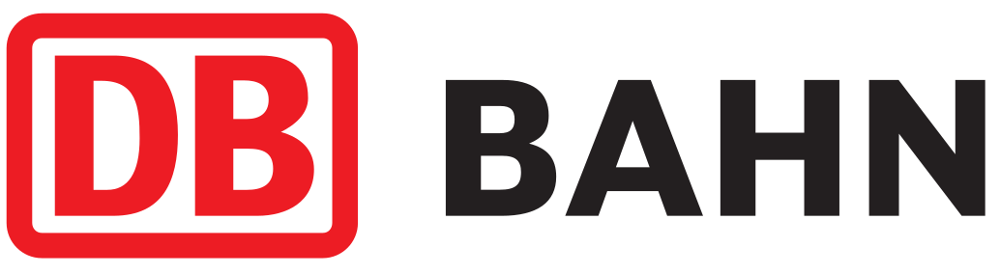
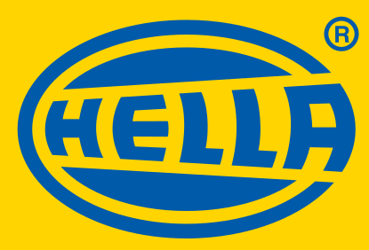

IT-Personallösungen für den Mittelstand – rechtssicher & ohne Risiko
Wir unterstützen mittelständische Unternehmen in regulierten Branchen bei der Besetzung von IT-Projekten und IT-Positionen – mit Freelancern, Festanstellungen und Arbeitnehmerüberlassung.
Unverbindliches Erstgespräch jetzt vereinbaren
Sie kennen sicher die zentralen Risiken beim IT-Personal:
- Kritische IT-Rollen bleiben zu lange unbesetzt
- Rechtliche Unsicherheit bei Freelancern und externen IT-Kräften
- Unpassende Profile kosten Zeit und Nerven
- Fehlendes Verständnis für regulatorische Anforderungen
- Intransparente Prozesse und wechselnde Ansprechpartner
- Interne IT- und HR-Teams sind dauerhaft überlastet
1. Passgenaue IT-Experten
Fachlich geprüfte IT-Spezialisten mit Erfahrung im Mittelstand und in regulierten Branchen – keine Massenprofile, keine Zeitverluste.
2. Rechtssichere Einsatzmodelle
Ob Freelancer, Festanstellung oder ANÜ – immer AÜG-konform, prüfungssicher und abgestimmt auf Ihre Compliance-Vorgaben.
3. Verlässliche Prozesse
Klare Abläufe, feste Ansprechpartner und transparente Kommunikation – für planbare Besetzungen ohne Reibungsverluste.
Wir wissen, wie herausfordernd es ist, IT-Personal zu finden, wenn Zeitdruck, Fachkräftemangel und regulatorische Vorgaben gleichzeitig wirken.
Wir bringen Erfahrung mit, auf die Sie sich verlassen können:


So einfach finden Sie Ihre IT-Fachkraft
Schritt 1: Anfrage stellen
Beschreiben Sie uns Ihren Bedarf – ob Festanstellung, Freelancer oder Arbeitnehmerüberlassung. Wir melden uns innerhalb von 24 Stunden.
Schritt 2: Passgenaue Auswahl erhalten
Ihr fester Ansprechpartner analysiert Ihre Anforderungen und präsentiert Ihnen vorqualifizierte Kandidaten aus unserem Netzwerk.
Schritt 3: Erfolgreich besetzen
Sie wählen den passenden Kandidaten. Wir kümmern uns um alle Formalitäten – AÜG-konform und rechtssicher.
Unsere Zusagen an Sie:
- Fester Ansprechpartner während des gesamten Prozesses
- Transparente Abläufe ohne versteckte Kosten
- AÜG-konforme und geprüfte Einsatzmodelle
- Kandidaten mit nachgewiesener Erfahrung in regulierten Branchen
Wir wissen, dass Sie verlässliche IT-Fachkräfte einsetzen möchten, um Ihre Projekte sicher und planbar umzusetzen.
Dafür benötigen Sie qualifizierte Experten, die fachlich passen und zugleich den regulatorischen Anforderungen Ihres Unternehmens gerecht werden. Das Problem ist, dass der IT-Fachkräftemangel, unklare rechtliche Rahmenbedingungen und ungeeignete Dienstleister Entscheidungen erschweren und Projekte verzögern – was verständlicherweise zu Unsicherheit und Frustration führt.
Wir sind überzeugt, dass Unternehmen im Mittelstand Zugang zu qualifizierten IT-Experten haben sollten, ohne rechtliche oder organisatorische Risiken einzugehen. Wir verstehen, wie komplex IT-Besetzungen in regulierten Branchen sind, weshalb wir uns auf rechtssichere und passgenaue Personallösungen spezialisiert haben.
So arbeiten wir: Erstens analysieren wir Ihren konkreten Bedarf und die regulatorischen Anforderungen. Zweitens identifizieren wir geeignete IT-Fachkräfte aus unserem geprüften Netzwerk. Drittens setzen wir das passende Modell um – ob Freelancer, Festanstellung oder Arbeitnehmerüberlassung.
Vereinbaren Sie jetzt ein unverbindliches Erstgespräch, und lassen Sie uns Ihren Personalbedarf gemeinsam klären. In der Zwischenzeit stellen wir Ihnen gerne zusätzliche Informationen zu Einsatzmodellen und Compliance zur Verfügung. So können Sie auf langwierige Suchen, rechtliche Unsicherheiten und unpassende Profile verzichten – und sich stattdessen auf stabile, sichere und erfolgreiche IT-Projekte konzentrieren.